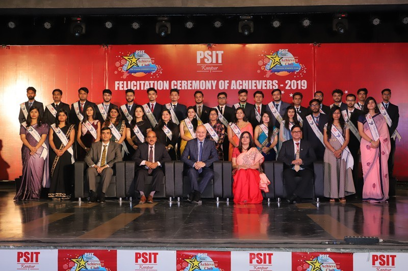
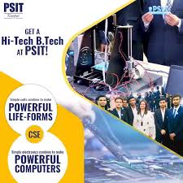

PSIT KANPUR
Since its inception in 2004, PSIT has been a front runner in the world of education and has numerous achievements to its name. At PSIT education carries a strong emphasis on foundational knowledge, thorough academic research based on rigorous pedagogy, and hands-on experience with real-world challenges. The institute prepares students to be ethical leaders in a diverse and complex world. PSIT offers various courses in Engineering, Pharmacy, Business Management and Computer Applications. All departments, with their dynamic community of students and accomplished faculty, offer a distinctive combination of the finest undergraduate and postgraduate programs. World-class facilities and a residential campus set on a sprawling 80 acres of sylvan surroundings incline to learn.
|

Increase the worldly wisdom and awareness the reading rooms have an important role to play in the life and routine of the students. We follow the same rule here in PSIT as well.
We have a fully air-conditioned Central Library with proper seating capacity and flexible timings so that the students can utilise their time.
|